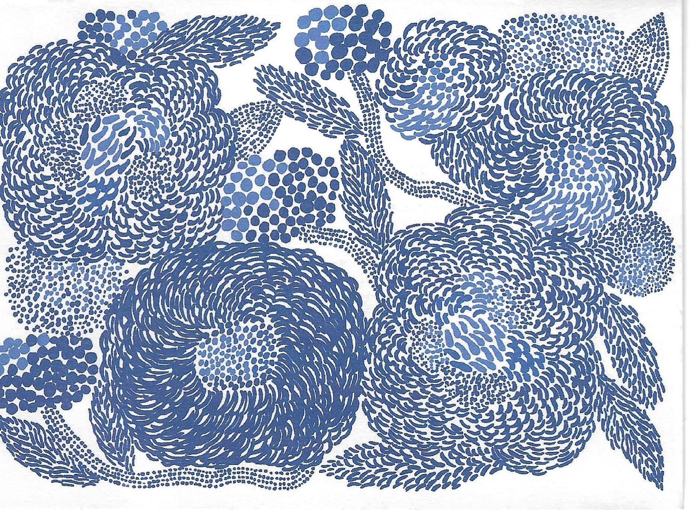
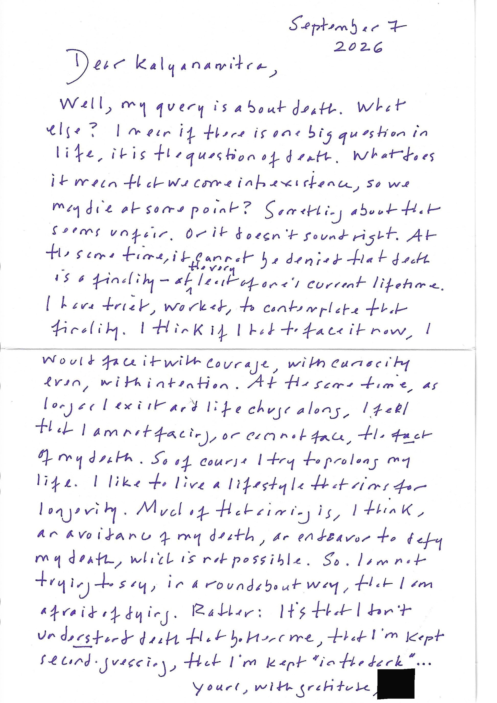
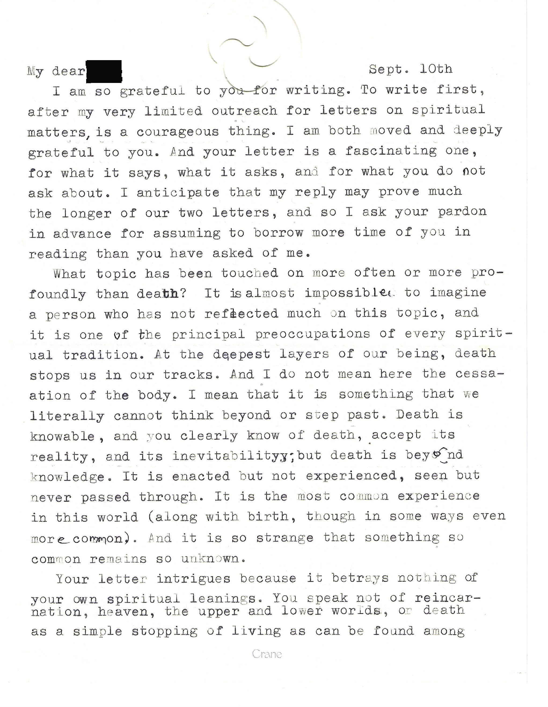
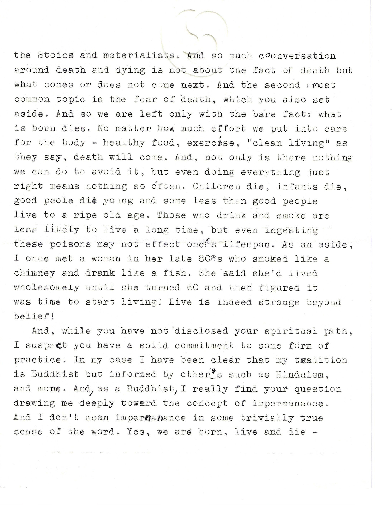
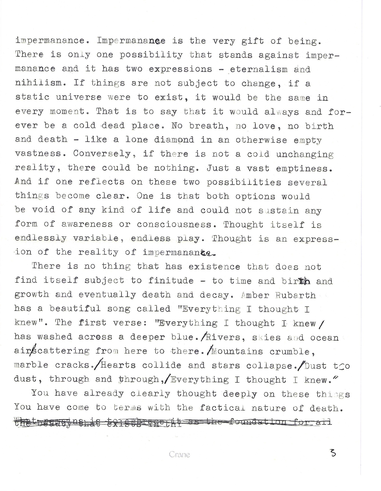
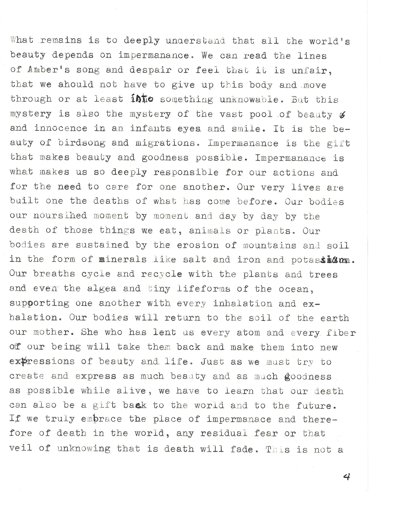
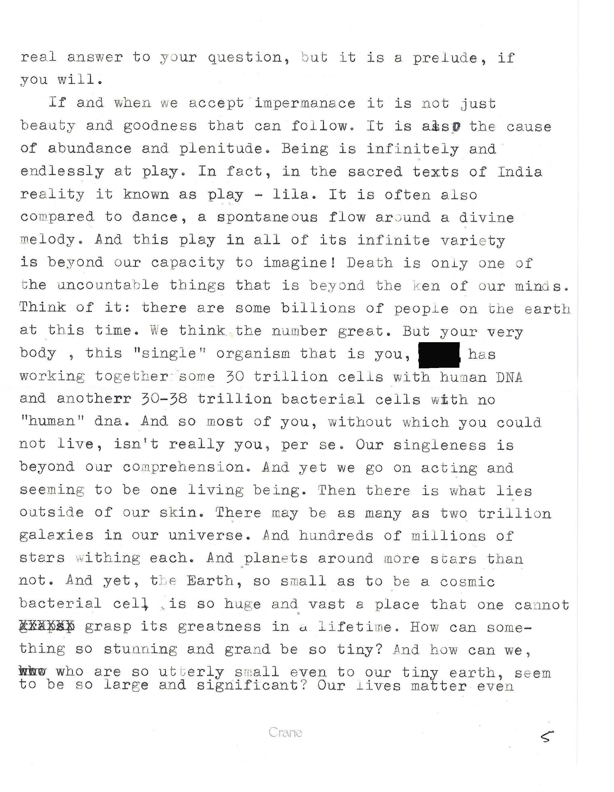
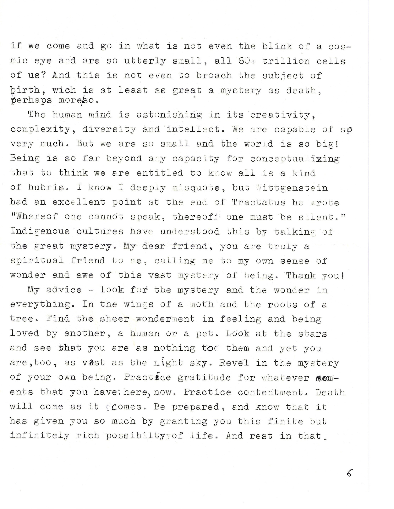
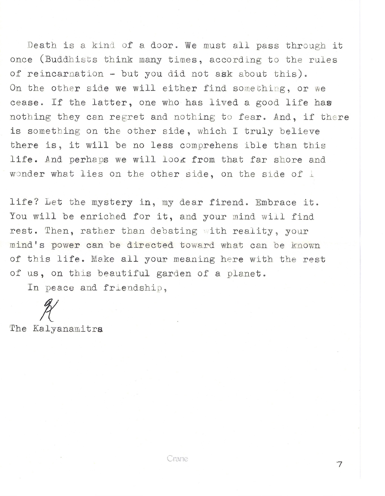

A reader writes about death. Facing it feels possible in principle, but something feels inherently unfair about one's life coming to an end. The reply doesn't try to solve the question but reframes death entirely, turning to impermanence, and to what happens when we let the mystery in rather than argue with it.








